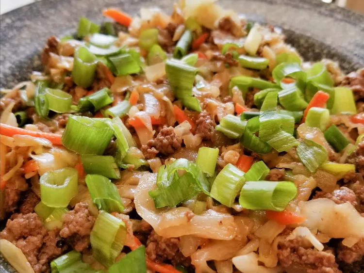

Keto Beef Egg Roll Slaw

Description
A low-carb, savory dish that combines seasoned ground beef with crunchy, fresh cabbage slaw. Wrapped in a crispy, keto-friendly wrapper or served as a bowl, it's a flavorful, satisfying meal packed with protein and healthy fats, perfect for anyone following a keto diet.
Ingredients
- 2 tablespoons sesame oil
- 1/2 cup diced onion
- 5 green onions, chopped, white and green parts separated
- 3 cloves garlic, minced
- 1 1/2 pounds ground beef
- 1 tablespoon chili-garlic sauce
- 1/2 teaspoon ground ginger
- 1 package coleslaw mix
- 3 tablespoons soy sauce
- 1 tablespoon apple cider vinegar
- Sea salt to taste
- Ground black pepper to taste
Steps
- Heat oil in a large skillet over medium-high heat.
- Add diced onion, white parts of the green onions, and garlic. Saute until onions are translucent and garlic is fragrant, about 5 minutes.
- Add ground beef, sriracha, ginger, salt, and black pepper. Saute until beef is browned and crumbly, about 5 minutes.
- Stir coleslaw mix, soy sauce, and cider vinegar into the beef mixture. Saute until coleslaw is tender, about 4 minutes more.
- Top with the rest of the green onions. Enjoy!
Home